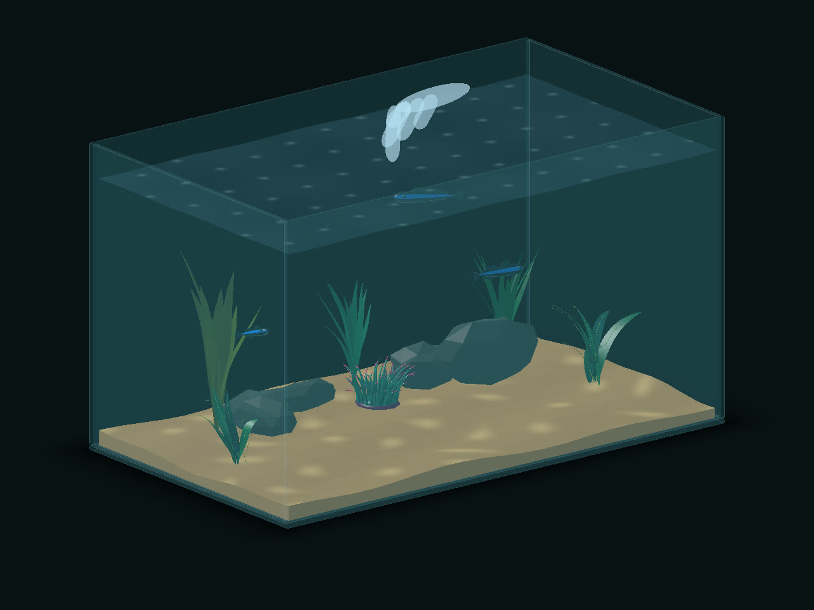
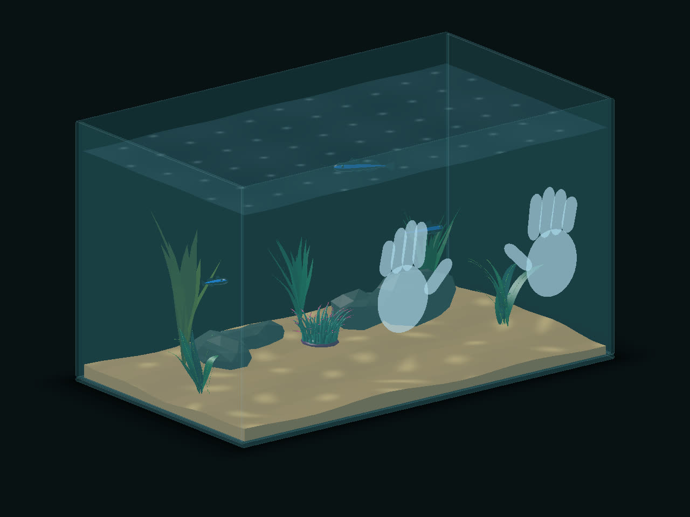
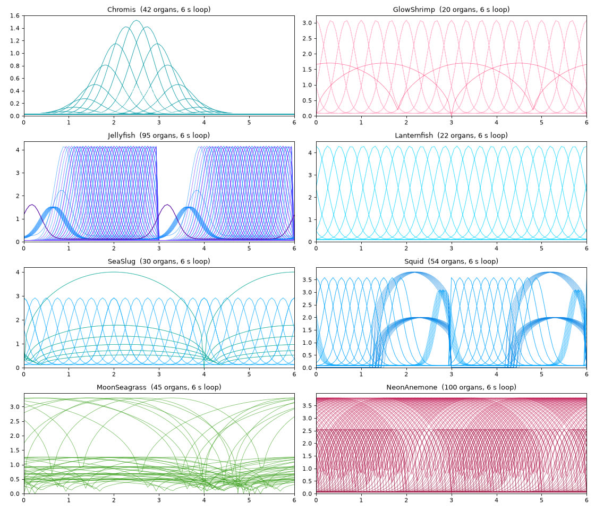
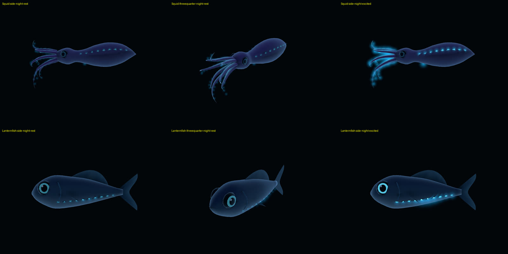

Solo · AI-assisted (Claude Code) · Meta VR Start 2026独立 · AI 协助开发（Claude Code）· Meta VR Start 2026
VR Aquarium
Unity 6 · Meta Quest · Mixed Reality · Hand Tracking
A living aquarium that sits on your real desk. There are no controllers: rest a hand in the water and fish come to nibble, pinch above the surface to feed, stir and they scatter. Fish get to know your hand and fall ill if neglected, but nobody dies. Switch off your real room light and night creatures arrive and glow. In progress for the Meta VR Start competition (due 18 November 2026). 一个放在你真实书桌上的活水族箱。不用手柄：手放进水里，鱼会过来轻啄；在水面上方捏一下就是喂食；搅动水，鱼就散开。鱼会认得你的手，被冷落会生病，但不会死。关掉房间的真灯，夜间生物就会出现并发光。正在为 Meta VR Start 比赛开发（11 月 18 日截止）。
Problem问题
A seated, hands-only experience has to teach itself without text, and give players a reason to come back.
坐着、只用双手的体验，要在没有文字教程的情况下让人学会，还要给玩家回来的理由。
Decision决策
Make hand-and-water contact the whole interface, teach it with a looping ghost hand, and build the return loop on bonding and care instead of death.
让手和水的接触成为全部交互，用循环演示的虚影手来教；回访的动力来自亲密度和照料，而不是死亡惩罚。
Outcome结果
Ten species, a day/night cycle driven by the real room light, and 184 passing EditMode tests. Release builds run on a Quest 2.
十种生物，昼夜由房间真实灯光驱动，184 个 EditMode 测试通过。Release 包已在 Quest 2 上运行。
Unity editor render. Headset capture comes with the competition video.Unity 编辑器渲染画面；头显实录会随比赛视频补上。
Three hand gestures, no tutorial text三个手势，没有文字教程
Rest放手
A still hand in the water attracts nearby fish; at most four crowd it at once.
手静止放在水里，附近的鱼会过来；最多四条同时围上来。
Feed喂食
A pinch above the surface drops food; fish swim to the nearest point they can actually reach.
在水面上方捏一下就会投食；鱼会游向自己真正够得到的最近一点。
Stir搅动
A fast hand scatters the fish and sways the plants.
手快速划过，鱼散开、水草摆动。
A ghost hand loops each gesture. Tests run every demo motion through the real gesture classifier, so the demo can't teach a move the game won't accept.虚影手循环演示每个手势。测试会把每段演示动作送进真实的手势识别，保证演示的动作游戏一定认。

Designing for what players actually do按玩家真实的动作来设计
The highlight moment is pressing both hands on the glass to flood the room: the glass dissolves, the sea fills your space, coral grows on your scanned furniture and a manta circles you. The first detector expected a push outward from inside the tank. On the headset, players did the opposite: they rested both palms on the outside of the glass. Hand logs showed the hands held still about 35 cm in front of the front pane. I changed the trigger to a press-and-hold (both palms facing the tank on the same face, held still for 0.8 s, release before it can fire again) and moved the ghost hand to demonstrate that motion.
高光时刻是双手按在玻璃上让海水淹没房间：玻璃消失，海水充满你的空间，珊瑚长在扫描到的家具上，一条蝠鲼绕着你游。最初的检测要求手从缸内向外推。戴上头显后，玩家的动作正好相反：两只手掌按在玻璃外侧。手部日志显示双手静止在前玻璃外大约 35 厘米处。我把触发改成「按住」（两掌朝缸、按在同一面玻璃前、静止 0.8 秒，松手后才能再次触发），并让虚影手演示这个动作。

Night, light and glow夜晚、灯光与发光
The Passthrough Camera API samples the room's brightness, with hysteresis so a flicker doesn't toggle the mode. Turning the real light off brings out the night creatures. Their glow is authored, not random: keyframed emission in Blender is exported as per-organ curves (a 6-second loop), and each creature rests at a dim level and brightens when touched, stirred or fed. Night creatures carry glow genes, so their young mix their parents' light. All creatures are procedurally generated, original to the project, and all audio is synthesised.
Passthrough Camera API 采样房间亮度，加了迟滞，灯光闪一下不会来回切换。关掉真灯，夜间生物就会出现。它们的光是设计好的，不是随机的：在 Blender 里给发光做关键帧，按器官导出成曲线（6 秒循环）；平时保持暗光，被触碰、搅动或喂食时变亮。夜间生物带有发光基因，后代会混合父母的光。所有生物都是程序化生成、项目原创，所有音效都是合成的。


The new jellyfish uses a custom shader: the bell contracts per vertex and the lower parts trail behind using recent positions. Not yet swapped into the tank.新水母用自定义着色器：伞盖逐顶点收缩，下半部分按之前的位置拖在后面。还没有替换进鱼缸。